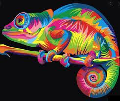

Ahhoz, hogy jó kommunikátor legyél, jól át kell adnod ötleteidet és véleményedet, ugyanakkor másokra is figyelned kell, és figyelembe kell venniük az ötleteiket.
Az olvasás, az írás, a jó kifejezésmód és a figyelmes hallgatás a legfontosabb kommunikációs készségek.
Szervezőképesség KMD
Szervezőképesség
A jó szervezőképességű ember képes rendkívül rövid reakcióidő alatt prioritásokat, fontossági sorrendeket kell állítani.Még a legnagyobb leterhelés esetén is úgy képes a határidőket, a körülményeket és a munkafolyamatokat harmonizálni és irányítani, hogy azok optimális munkavégzés mellett is betarhatóak legyenek.
Kritikai gondolkodás PV
Kritikai gondolkodás
A kritikai gondolkodás magában foglalja az állandó körültekintést és reflexiót, a mindenütt jelen lévő módszertani korlátok felismerését, mindamellett a hitet a tudományos racionalitásban és a problémák tudományos megközlíthetőségben.
Csapatmunka PL
Csapatmunka
Csapatmunkának nevezzük azt, amikor két vagy több ember együtt dolgozik. Bár elég egyszerűnek tűnhet ez a megfogalmazás, a valóságban ennél többről van szó. Nem elég ugyanis együtt dolgozni, mindezt hatékonyan, eredményesen kell véghezvinni.Együttműködés: Ahhoz, hogy a csapattagok hatékonyan tudjanak együttműködni egymással, szükséges, hogy ismerjék egyes tagok, csoportvezetők feladatát és szerepkörét is.
Szociális készségek TL
Szociális készségek
A szükséges források megszerzésének képességétől, a speciális viselkedésen keresztül, a gyakori együttműködésig, az énkép és a kognitív készségek fogalmáig számos megközelítés előfordult:Társas kapcsolatokra és a csoportnormák, elvárások betartására teszik alkalmassá az egyént.Olyan tudatalatti hatások, amelyek meghatározzák az egyén világról alkotott képét, a társas együttműködéssel kapcsolatos célokat, az énképet.A szociális feladatokkal kapcsolatos információk feldolgozását,kódolását, megértését és a válasz keresését, kiválasztását, értékelését segítik.
Kreativitás SZS
Kreativitás
A kreativitás eredeti, újszerű dolgok, tárgyak, gondolatok, létrehozásában nyilvánul meg.
Könnyedség
A szellemi termékenység könnyedsége, gyorsasága, mennyisége, folyékonysága.
Rugalmasság
A szellemi mozgékonyság képessége ez a változó igényekhez való hajlékony alkalmazkodás ami lehet spontán is, lehet adaptív is.
Eredetiség
A váratlan, a szokatlan, újszerű kedvelése, szellemesség, találó jelleg, ritkaság, asszociációs távolság a mutatói.
Kidolgozottság
A részletek kidolgozásának, a komplexitásának az igénye és preferenciája adja ezt a képességet.
Interperszonális kommunikáció SzB
Interperszonális kommunikáció
Ez egy olyan folyamat, amelynek során két vagy több ember információt, jelentést, érzelmet vagy ötletet cserél egymással. Ez a csere történhet verbálisan és nem verbálisan is, és általában úgy gondolják, hogy személyesen kell lebonyolítani.
Az interperszonális kommunikációs folyamat mindenféle folyamatot és elemet magában foglal, és nem csak elmondottakra korlátozódik, hanem köze van a mondanivalójához, kontextushoz és más olyan elemekhez is, amelyeket szabad szemmel nem olyan könnyű felismerni.
Alkalmazkodóképesség TR

Alkalmazkodóképesség
Az egy olyan képesség amely révén az egyén a változásokhoz, új körülményekhez tud alkalmazkodni.
Kifejezi az ember szellemi tulajdonságait.
Olyan tulajdonság a személyiségpszichológiában, amelynek következtében az egyénnek több lehetősége van, mint az alacsony adaptációs képességű embereknek.
Barátságosság TD
Barátságosság
A barátság összetett támogató emberi viszony. A barátság egyéni vonatkoztatásban, lelki, vagyis érzelmi, anyagi és kognitív erőforrás.
A barátság az egyik emberi kapcsolat, mely emberek között alakul ki több örömteli találkozás beszélgetés által. Jellemzi a kölcsönös elfogadás szeretet, bizalom, együttérző képesség, nyitottság, törődés.
Problémamegoldó képesség KN
Problémamegoldó képesség
Az egyes gondolkodási lépések olyan láncolatát, amely problémától törés nélkül elvezet a megoldásig, logikai gondolatmenetnek nevezzük.Ez mentes az egyéni vonásoktól, a különböző tévedésektől, tévutaktól.
Proaktivitás ÉL
Proaktivitás
Arra a hozzáállásra vonatkozik, amelyet egyes emberek vállalnak olyan helyzetekben vagy feladatokban való részvételre, amelyeket ellenőrizni kell, felelősségteljes irányítás és magas reagálási képesség.
Céltudatos, pontosan tudja mit akar
Belülről motivált
Nem kerüli a kudarcokat
A hibáiból tanul és jobb lesz
Nem ösztönből és érzelmi alapon reagál
A lehetséges eredményekre koncentrál
A saját döntéseiért és tetteiért vállalja a felelősséget
Megelőzi az eseményeket, nem várja meg míg ,,muszáj” tenni valamit
Érzelmi intelligencia (EQ) FG
Érzelmi intelligencia (EQ)
Az érzelmi intelligencia az a képesség, amelynek segítségével saját és embertársaink érzelmeit felismerjük, azonosítjuk, értelmezzük
és kezeljük.
Empatikus + támogatói attitűd BP
Empatikus + támogatói attitűd
A tudás az emberiség közös alkotása.Mindenkinek alapjoga a tudáshoz való hozzáférés.A tanulási tevékenységeket tehát úgy kell megszervezni,hogy a tudáshoz való hozzáférés mindenki számára biztosított legyen. A tanulásnak a tanulni vágyó individiumból kell kiindulnia.Mindenki egyedi és komplex tudáskonstrukciót működtet.Kifejezett empátiára is szükség van tanulás során.
Önismeret BR
Önismeret
Az önismeret fejlődő és fejleszthető képesség, mely formálható önmagunk megfigyelésével és elemzésével, illetve a környezetünk felénk irányuló visszacsatolásai által kialakuló énképünk tudasitásával.
Az önismereti fejlődés eredményeként létrejön a koherens énfogalom,és kialakítható a helyes önértékelés.
Önreflexió DV
Önreflexió
A személyes fejlődés egyik legfontosabb eszköze.
Segít, hogy életünk során értékeinknek és céljainknak jobban megoldjuk a felmerülő kihívásokat és megismerjük saját valódi mozgatórugóinkat.